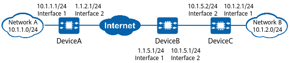

Example for Establishing an IPsec Tunnel in a NAT Scenario (NAT Is Performed by the HQ Gateway)
Networking Requirements
Employees at the branch need to access the servers at the HQ. The information obtained from the servers is confidential and needs to be encrypted for secure transmission over the Internet through an IPsec tunnel.

In this example, interface 1 and interface 2 represent 10GE 0/0/1 and 10GE 0/0/2 on DeviceA, respectively.

Item |
Data |
|---|---|
DeviceA |
Interface: 10GE 0/0/1 IP address: 10.1.1.1/24 |
Interface: 10GE 0/0/2 IP address: 1.1.2.1/24 |
|
IPsec configuration Authentication type: pre-shared key PSK: YsHsjx_202206 Remote ID type: any NAT traversal: enabled |
|
DeviceB |
Interface: 10GE 0/0/1 IP address: 1.1.5.1/24 |
Interface: 10GE 0/0/2 IP address: 10.1.5.1/24 |
|
NAT configuration Easy IP |
|
DeviceC |
Interface: 10GE 0/0/1 IP address: 10.1.2.1/24 |
Interface: 10GE 0/0/2 IP address: 10.1.5.2/24 |
|
IPsec configuration Authentication type: pre-shared key PSK: YsHsjx_202206 Local ID type: IP address Remote ID type: any NAT traversal: enabled |
Configuration Roadmap
The tunnel negotiation parameter settings on DeviceA and DeviceC must be the same.
This example uses default security algorithms of IPsec.
For security purposes, you are advised not to use the weak security algorithm or weak security protocol of this feature. If you must use such weak security algorithm or protocol, run the install feature-software WEAKEA command to install the weak security algorithm or protocol feature package WEAKEA.
- The HQ and branch communicate with each other through the NAT gateway. Therefore, you need to enable NAT traversal on the HQ and branch gateways to establish an IPsec tunnel.
- If there is a NAT device between the HQ and branch, configure a template IPsec policy at the HQ and do not specify the peer IP address when configuring an IKE peer.
When configuring an IPsec proposal, retain the default security protocol, Encapsulating Security Payload (ESP).
Procedure
- Configure public and private network interfaces on DeviceA.
# Configure the private network interface 10GE 0/0/1.
<HUAWEI> system-view [HUAWEI] sysname DeviceA [DeviceA] interface 10ge 0/0/1 [DeviceA-10GE0/0/1] undo portswitch [DeviceA-10GE0/0/1] ip address 10.1.1.1 24 [DeviceA-10GE0/0/1] quit
# Configure the public network interface 10GE 0/0/2.
[DeviceA] interface 10ge 0/0/2 [DeviceA-10GE0/0/2] undo portswitch [DeviceA-10GE0/0/2] ip address 1.1.2.1 24 [DeviceA-10GE0/0/2] quit
- Configure static routes on DeviceA to divert tunnel negotiation packets and encrypted data packets transmitted through the tunnel.
Assume that the next-hop IP address of the route from DeviceA to the Internet is 1.1.2.2.
# Configure a static route to DeviceC to divert tunnel negotiation packets.
[DeviceA] ip route-static 10.1.5.0 255.255.255.0 1.1.2.2
# Configure a static route to network B to divert encrypted data packets transmitted through the tunnel.
[DeviceA] ip route-static 10.1.2.0 255.255.255.0 1.1.2.2
- Configure a template IPsec policy on DeviceA and apply it to 10GE 0/0/2.
- Configure an IKE peer.
[DeviceA] ike peer c [DeviceA-ike-peer-c] ike-proposal 10 [DeviceA-ike-peer-c] pre-shared-key YsHsjx_202206 [DeviceA-ike-peer-c] nat traversal [DeviceA-ike-peer-c] quit
By default, NAT traversal is enabled. If NAT traversal is disabled, run the nat traversal command to enable it again.
- Configure an IKE peer.
- Configure public and private network interfaces on DeviceC.
# Configure the private network interface 10GE 0/0/1.
<HUAWEI> system-view [HUAWEI] sysname DeviceC [DeviceC] interface 10ge 0/0/1 [DeviceC-10GE0/0/1] undo portswitch [DeviceC-10GE0/0/1] ip address 10.1.2.1 24 [DeviceC-10GE0/0/1] quit
# Configure the interface 10GE 0/0/2 connected to the NAT gateway.
[DeviceC] interface 10ge 0/0/2 [DeviceC-10GE0/0/2] undo portswitch [DeviceC-10GE0/0/2] ip address 10.1.5.2 24 [DeviceC-10GE0/0/2] quit
- Configure static routes on DeviceC to divert tunnel negotiation packets and encrypted data packets transmitted through the tunnel.
Assume that the next-hop IP address of the route from DeviceC to the Internet is 2.2.2.254.
# Configure a static route to DeviceA to divert tunnel negotiation packets.
[DeviceC] ip route-static 1.1.2.0 255.255.255.0 10.1.5.1
# Configure a static route to network A to divert encrypted data packets transmitted through the tunnel.
[DeviceC] ip route-static 10.1.1.0 255.255.255.0 10.1.5.1
- Configure an ISAKMP IPsec policy on DeviceC and apply it to 10GE 0/0/1.
- Configure an IKE peer.
[DeviceC] ike peer a [DeviceC-ike-peer-a] ike-proposal 10 [DeviceC-ike-peer-a] remote-address 1.1.2.1 [DeviceC-ike-peer-a] pre-shared-key YsHsjx_202206 [DeviceC-ike-peer-a] nat traversal [DeviceC-ike-peer-a] quit
By default, NAT traversal is enabled. If NAT traversal is disabled, run the nat traversal command to enable it again.
- Configure an IPsec policy.
[DeviceC] ipsec policy map1 10 isakmp [DeviceC-ipsec-policy-isakmp-map1-10] security acl 3000 [DeviceC-ipsec-policy-isakmp-map1-10] proposal tran1 [DeviceC-ipsec-policy-isakmp-map1-10] ike-peer a [DeviceC-ipsec-policy-isakmp-map1-10] sa trigger-mode auto [DeviceC-ipsec-policy-isakmp-map1-10] quit
By default, the negotiation for IPsec tunnel establishment is triggered by traffic. To enable automatic negotiation for IPsec tunnel establishment, run the sa trigger-mode auto command.
- Configure an IKE peer.
- Configure interfaces 10GE 0/0/1 and 10GE 0/0/2 on DeviceB (NAT gateway). For details, see the configurations of DeviceA and DeviceC.
- Configure a NAT policy on DeviceB.
[DeviceB] nat-policy [DeviceB-policy-nat] rule name policy_nat1 [DeviceB-policy-nat-rule-policy_nat1] source-address 10.1.5.0 24 [DeviceB-policy-nat-rule-policy_nat1] action source-nat easy-ip [DeviceB-policy-nat-rule-policy_nat1] quit [DeviceB-policy-nat] quit
- Configure static routes from DeviceB (NAT gateway) to the branch network and HQ network.
[DeviceB] ip route-static 10.1.1.0 255.255.255.0 1.1.5.2 [DeviceB] ip route-static 10.1.2.0 255.255.255.0 10.1.5.2 [DeviceB] ip route-static 1.1.2.0 255.255.255.0 1.1.5.2
Assume that the next-hop IP address of the route from DeviceB to the Internet is 1.1.5.2.
Verifying the Configuration
After the configuration is complete, run the ping command on a device in the protected network segment of network A or network B to trigger IKE negotiation.
If IKE negotiation succeeds, devices in the protected network segments at both ends of the tunnel can ping each other successfully. Otherwise, IKE negotiation fails.
The device on network B can ping the IP address 1.1.2.1 of 10GE 0/0/1 on DeviceA, and NAT session entries can be viewed on DeviceB.
<DeviceB> display session all verbose Session Table Information: Protocol : 17(UDP) SrcAddr Port Vpn : 10.1.5.2 500 DestAddr Port Vpn : 1.1.2.1 500 Time To Live : 60s NAT Info New SrcAddr : 1.1.5.1 New SrcPort : 2050 New DestAddr : - New DestPort : - Session Table Information: Protocol : 17(UDP) SrcAddr Port Vpn : 10.1.5.2 4500 DestAddr Port Vpn : 1.1.2.1 4500 Time To Live : 60s NAT Info New SrcAddr : 1.1.5.1 New SrcPort : 2050 New DestAddr : - New DestPort : - Total : 1On DeviceA and DeviceC, run the display ike sa and display ipsec sa commands to check SA establishment information. The following example uses the command output on DeviceC, which shows that IKE SAs and IPsec SAs have been established successfully.
<DeviceC> display ike sa Total number of IKE SA in all CPU : 2 Total number of phase 1 SA in all CPU : 1 Total number of phase 2 SA in all CPU : 1 Flag Description: RD--READY ST--STAYALIVE RL--REPLACED FD--FADING TO--TIMEOUT HRT--HEARTBEAT LKG--LAST KNOWN GOOD SEQ NO. BCK--BACKED UP M--ACTIVE S--STANDBY A--ALONE NEG--NEGOTIATING Slot 0, cpu 0 IKE SA information : Number of IKE SA : 2, number of IKE SA1: 1, number of IKE SA2: 1 ----------------------------------------------------------------------------- Conn-ID Peer VPN Flag(s) Phase RemoteType RemoteID ----------------------------------------------------------------------------- 16777239 1.1.2.1/4500 RD|ST|A v2:2 IP 1.1.2.1 16777232 1.1.2.1/4500 RD|ST|A v2:1 IP 1.1.2.1<DeviceC> display ipsec sa Slot 0, cpu 0 ipsec sa information: =============================== Interface: 10GE0/0/2 =============================== ----------------------------- IPSec policy name: "map1" Sequence number : 10 Acl group : 3000/IPv4 Acl rule : 5 Mode : ISAKMP --------------------------- Connection ID : 15 Encapsulation mode: Tunnel Holding time : 0d 3h 2m 27s Tunnel local : 10.1.5.2/4500 Tunnel remote : 1.1.2.1/4500 Flow source : 10.1.2.0/255.255.255.0 0/0-65535 Flow destination : 10.1.1.0/255.255.255.0 0/0-65535 [Outbound ESP SAs] SPI: 16094981 (0xf59705) Proposal: ESP-ENCRYPT-AES-GCM-256 SA remaining soft duration (kilobytes/sec): 71947703/971 SA remaining hard duration (kilobytes/sec): 83691755/1475 Max sent sequence-number: 1745520 UDP encapsulation used for NAT traversal: Y SA encrypted packets (number/bytes): 1745520/198989280 [Inbound ESP SAs] SPI: 16066148 (0xf52664) Proposal: ESP-ENCRYPT-AES-GCM-256 SA remaining soft duration (kilobytes/sec): 73625425/1043 SA remaining hard duration (kilobytes/sec): 83691755/1475 Max received sequence-number: 1745523 UDP encapsulation used for NAT traversal: Y SA decrypted packets (number/bytes): 1745523/198989622 Anti-replay : Enable Anti-replay window size: 1024
Configuration Scripts
- DeviceA
# sysname DeviceA # acl number 3000 rule 5 permit ip source 10.1.1.0 0.0.0.255 destination 10.1.2.0 0.0.0.255 # ipsec proposal tran1 esp authentication-algorithm sha2-256 esp encryption-algorithm aes-256-gcm-128 # ike proposal 10 encryption-algorithm aes-gcm-256 dh group14 authentication-method pre-share integrity-algorithm hmac-sha2-256 prf hmac-sha2-256 # ike peer c pre-shared-key %@%@'OMi3SPl%@TJdx5uDE(44*I^%@%@ ike-proposal 10 # ipsec policy-template map_temp 1 security acl 3000 ike-peer c proposal tran1 sa trigger-mode auto # ipsec policy map1 10 isakmp template map_temp # interface 10GE0/0/2 ip address 1.1.2.1 255.255.255.0 ipsec policy map1 # interface 10GE0/0/1 ip address 10.1.1.1 255.255.255.0 # ip route-static 10.1.2.0 255.255.255.0 1.1.2.2 ip route-static 10.1.5.0 255.255.255.0 1.1.2.2 # return
- DeviceB (NAT gateway)
# sysname DeviceB # interface 10GE0/0/1 nat enable ip address 1.1.5.1 255.255.255.0 # interface 10GE0/0/2 ip address 10.1.5.1 255.255.255.0 # ip route-static 10.1.1.0 255.255.255.0 1.1.5.2 ip route-static 10.1.2.0 255.255.255.0 10.1.5.2 ip route-static 1.1.2.0 255.255.255.0 1.1.5.2 # nat-policy rule name policy_nat1 source-address 10.1.5.0 mask 255.255.255.0 action source-nat easy-ip # return
- DeviceC
# sysname DeviceC # acl number 3000 rule 5 permit ip source 10.1.2.0 0.0.0.255 destination 10.1.1.0 0.0.0.255 # ipsec proposal tran1 esp authentication-algorithm sha2-256 esp encryption-algorithm aes-256-gcm-128 # ike proposal 10 encryption-algorithm aes-gcm-256 dh group14 authentication-method pre-share integrity-algorithm hmac-sha2-256 prf hmac-sha2-256 # ike peer a pre-shared-key %@%@W[QD:1tV\'f"!1W&yrX6v$B>%@%@ ike-proposal 10 remote-address 1.1.2.1 # ipsec policy map1 10 isakmp security acl 3000 ike-peer a proposal tran1 sa trigger-mode auto # interface 10GE0/0/2 ip address 10.1.5.2 255.255.255.0 ipsec policy map1 # interface 10GE0/0/1 ip address 10.1.2.1 255.255.255.0 # ip route-static 1.1.2.0 255.255.255.0 10.1.5.1 ip route-static 10.1.1.0 255.255.255.0 10.1.5.1 # return